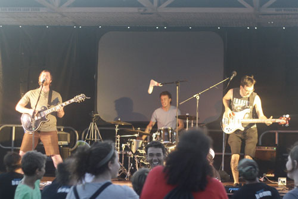
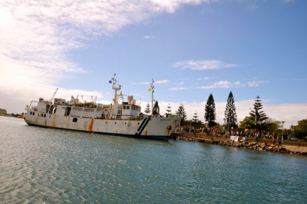

28 Feb 2010
YWAMships.org
The Cothran family helps call 100,000 Aussie youth to missions in 2010!
The ship was here in Newcastle from New Zealand the last 11 days! Around 150 YWAMers from Adelaide, Townsville, Brisbane, Newcastle and N.Z. came together to serve and promote the ship tour and call Australian youth into action in missions. The news station interviewed a few of our public relations coordinators and the report aired then and here it is for you: 
Our base hosted one of a few big dinners for all the visiting bases and ship crew from New Zealand. There were around 200 people packed into our backyard! It was a great missionary family time of connecting with old and new friends. Unity is a huge principle in the midst of ministry.
It was great being able to partner with so many people over this time as we shared the focus of Papua New Guinea in local churches and schools. Shawn led worship two mornings for the ministry training seminar for those involved. Sarah coordinated the Newie base's involvement and organised a huge presentation night by the beach with a massive stage and all the performing acts. One of those acts was Shawn's band. We rocked the stage and brought the message hard. Evan, Scott and I (the band guys) finished a brand new song in time to perform it as well (video will be up soon). Tons of people from our Youth Street Crew to couple just cruising the beachfront were impacted by the night and all the various ministries!